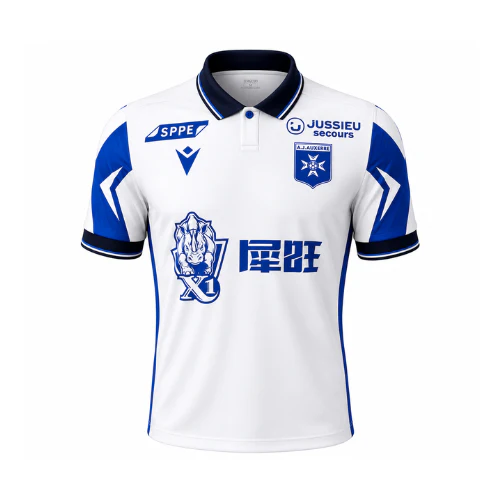

Maillot Domicile 2026/2027
Inspiré du maillot porté lors de la saison 1995-1996, le maillot domicile AJ Auxerre 2026/27 rend hommage à l'une des plus belles pages de l'histoire du club : le doublé Championnat – Coupe de France. Son col polo élégant et ses détails graphiques inspirés de la Croix de Malte, symbole emblématique de l'AJA, lui confèrent une identité à la fois authentique et moderne.
Conçu par Macron, ce maillot est fabriqué à partir de polyester 100 % recyclé et intègre des matières techniques offrant légèreté, respirabilité et confort, pour accompagner les joueurs comme les supporters tout au long de la saison.
| Nom de l'article | Image de l'article | Prix de l'article |
| Maillot AJA 2026/2027 |  | 89€ |